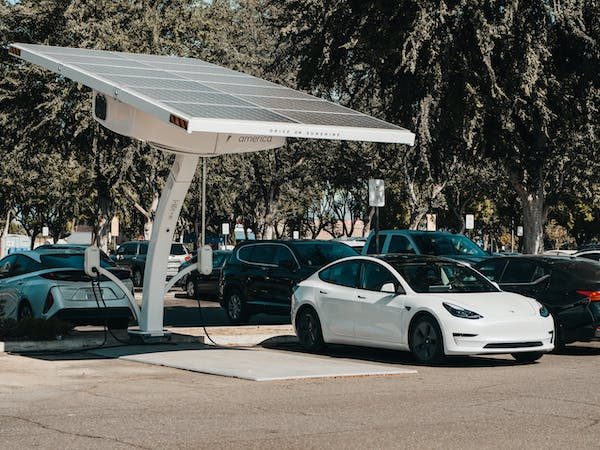

"Renewable Energy Integration: The benefits of renewable energy integration,
carbon emissions and energy independence."
As the world seeks sustainable solutions to combat climate change and reduce
dependence on fossil fuels, the integration of renewable energy sources with HVAC (Heating,
Ventilation, and Air Conditioning) systems has emerged as a powerful strategy. In this blog,
we'll delve into the exciting realm of renewable energy integration, exploring how solar, wind,
and innovative technologies are reshaping HVAC systems.